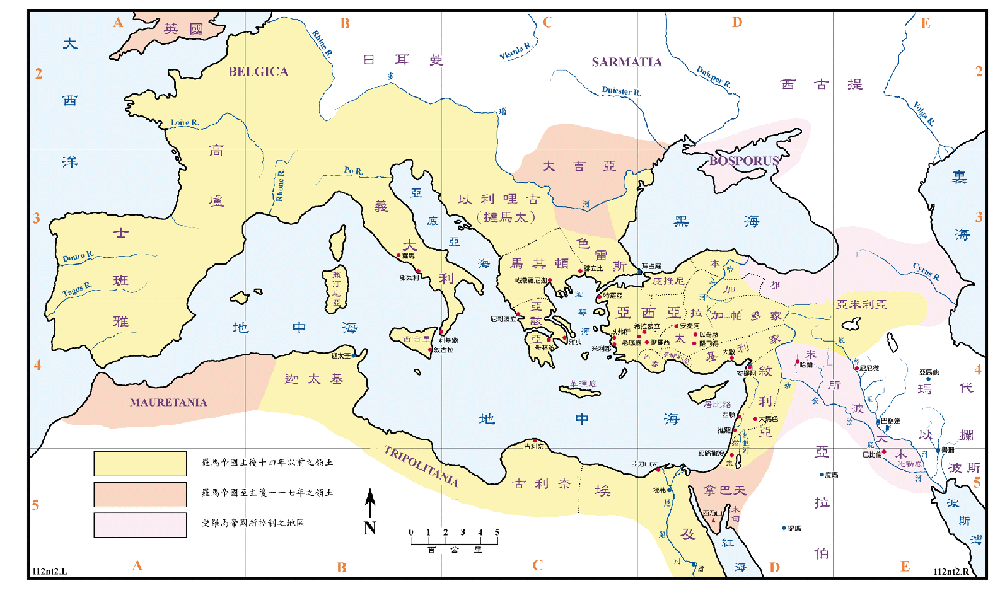

罗马帝国最初(753BC)原是以罗马城为中心的一个小城邦，历经二百四十三年，共有七个王，因其统治过虐，而在510BC被推翻。随后即改行共和政体，由贵族们组成之元老院共同执政，并且开始扩张国土，逐渐的占领了义大利的全境，又三次击败迦太基，再取得了西西里、撒丁利亚和科西嘉等三岛及西班牙、北非的迦太基和其属地，罗马就在地中海的西部称雄，然后进军东方。190BC战胜叙利亚，168BC亡马其顿，64BC亡西流基，30BC 亡多利买，原来希腊帝国之领土全纳入罗马帝国的版图。自 27BC 起，屋大维被推举为皇帝，改名奥古斯都，罗马就进入了帝国时代。当时的罗马帝国以现今之义大利为主体，其版图包括了地中海的沿岸地区，西至今日的西、葡、德、法等国和北非沿岸诸国，东则到达里海的边上，南方包括叙利亚、巴勒斯坦，直到埃及全地。当时罗马封大希律为犹太王，实际属於罗马的一个省。
自尼禄王开始，基督徒就备受迫害，主后六十四年七月，罗马发生大火，放火的人很可能就是尼禄王自己，但是他却指责基督徒是纵火者，用残酷的刑罚处治无辜的基督徒来取悦人民，据传说彼得就是在那时被害，保罗在两年后也被尼禄处死而殉道。主后六十六年犹太战争爆发，曾使圣地陷入非常可怕的情形之中。主后七十年四月提多领军围攻耶路撒冷，九月被攻克，刀与火毁灭了耶路撒冷，圣殿也被焚毁，成了一个空城。
不久之后，罗马帝国推行神化罗马皇帝的政策，要人民都拜罗马皇帝的像，使得基督徒受到很大的迫害，因而很多人为此殉道。
主后314 年君士坦丁大帝取得政权，即改奉基督教为国教，并将罗马帝国的命令规章应用在宗教上，成了政教合一，324 AD，他把希腊的古城拜占庭扩建，改名叫君士坦丁堡，成为他统治的新的首都。395 AD罗马帝国分裂成东西两个帝国，教会也同时分裂成东正教和西正教。东罗马帝国又称拜占庭帝国，以君士坦丁堡为首府，原(西)罗马帝国仍以罗马城为首府，410 AD西哥德人攻占罗马，455 AD汪达尔人再度入侵，西罗马於是覆亡，分裂成了许独立的小国，但是欧洲仍是在罗马文化和宗教的传承下，保持一种联合的状态，教会(西正教)以罗马城的梵谛冈为教廷，也成为拉丁文化主要的保存机构。法国对西正教一直表示尊敬，八世纪末，查理曼大帝改称自己的国家为神圣罗马帝国。
东罗马帝国延续了一千一百年之久，它的首都君士坦丁堡实在是罗马城的翻版，有七个山头，十四个行政区，其政府和公用设施建造得和罗马城的一样，甚至还从罗马城移了很多人来，使其新都有纯粹的拉丁气氛，到了十五世纪，君士坦丁堡的人仍自称是罗马人，君士坦丁堡也是东罗马教会，即东正教之教廷，俄罗斯之教会属君士坦丁堡管辖，土耳其占领君士坦丁堡后，莫斯科大公就宣称他是君士坦丁皇帝的继承人，莫斯科城也自称是第三个罗马城。1453 年土耳其的鄂图曼王朝灭了东罗马帝国，罗马帝国就完全结束。